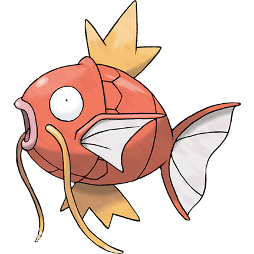

<mat-toolbar color="primary">
  <button mat-icon-button routerLink=".." aria-label="back">
    <mat-icon>arrow_back</mat-icon>
  </button>
  <a aria-label="go to about page" routerLink=".">About</a>
  <div style="flex: 1"></div>
  <a
    mat-icon-button
    target="_blank"
    href="https://github.com/wikylyu-xyz/clickman"
    aria-label="go to clickman github repo"
  >
    
  </a>
</mat-toolbar>

<div class="container">
  

  <p><b>ClickMan</b> is created by Wiky Lyu.</p>
  <p>
    Website:
    <a href="https://wikylyu.xyz" target="_blank">wikylyu.xyz</a>
  </p>
  <p>
    Email:
    <a href="mailto:wiky.lyu.dev@gmail.com?subject=ClickMan Support"
      >wiky.lyu.dev@gmail.com</a
    >
  </p>
</div>
